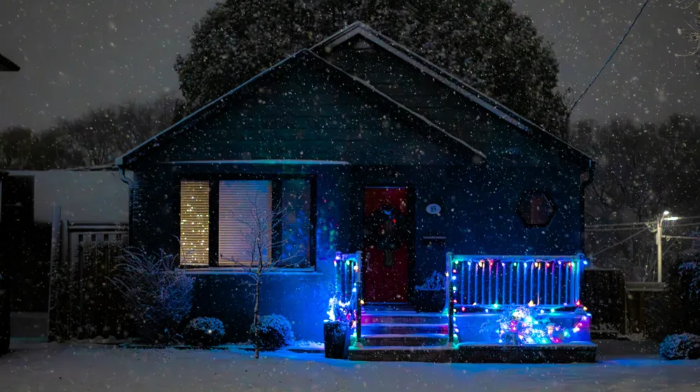

2024 에너지바우처 신청 자격, 내가 대상자인지 3분 만에 확인하는 법
사진: https://kaboompics.com/ / Pexels (무료 이미지, 출처 표기)
에너지바우처란? 지원 금액과 혜택 요약

에너지바우처는 취약계층이 시원한 여름과 따뜻한 겨울을 보낼 수 있도록 정부에서 냉·난방 에너지를 구입할 수 있는 이용권을 지원하는 제도입니다. 산업통상자원부와 한국에너지공단이 주관하며 매년 전기, 도시가스, 지역난방, 등유, LPG, 연탄 등을 구입할 수 있는 포인트를 지급합니다.
이 제도는 현금 지급이 아니라 고지서 요금을 자동으로 차감해 주거나, 실물 카드를 발급받아 직접 결제하는 방식으로 운영됩니다. 해마다 에너지 가격 변동에 따라 지원 금액이 조정되므로, 신청 전 당해 연도 기준을 확인하는 것이 좋습니다.
내가 받을 수 있을까? 핵심 지원 대상 2가지 조건
에너지바우처를 받기 위해서는 소득 기준과 가구원 특성 기준을 모두 충족해야 합니다. 주민등록표상 가구원 모두가 다음의 두 조건을 만족하는지 꼼꼼히 살펴보시기 바랍니다.
첫째, 소득 기준입니다. 국민기초생활 보장법에 따른 생계급여, 의료급여, 주거급여, 교육급여 수급자여야 합니다.
둘째, 가구원 특성 기준입니다. 수급자 본인 또는 주민등록표상 가구원이 다음 중 하나에 해당해야 합니다.
- 노인 (만 65세 이상)
- 영유아 (만 6세 미만)
- 장애인 (장애인복지법상 등록 장애인)
- 임산부 (임신 중이거나 분만 후 6개월 미만)
- 중증·희귀·난치질환자
- 한부모가족 또는 소년소녀가정 (가정위탁아동 포함)
2024년 에너지바우처 가구원수별 지원 금액
지원 금액은 가구원 수에 따라 차등 지급되며, 아래 표는 2024년도 기준으로 산정된 총액입니다. 하절기 바우처 잔액은 동절기로 이월하여 사용할 수 있습니다.
위 금액은 정부 정책에 따라 일부 변동될 수 있습니다. 자세한 요금 차감 시기 및 정산법은 신청 시 안내문을 통해 다시 한번 확인하시기 바랍니다.
에너지바우처 신청 방법과 진행 단계
신청은 주민등록상 거주지의 읍·면·동 행정복지센터(주민센터)를 방문하거나 복지로 홈페이지를 통해 편리하게 온라인으로 신청할 수 있습니다.
첫 번째 단계는 대상 여부 조회 및 서류 준비입니다. 신청인 신분증과 가장 최근에 납부한 전기, 가스 또는 지역난방 요금 고지서를 준비하면 처리가 빠릅니다. 대리인이 신청할 경우 위임장과 대리인 신분증이 추가로 필요합니다.
두 번째 단계는 바우처 지급 방식 선택입니다. 고지서에서 매달 자동으로 차감되는 가상카드 방식과, 직접 주유소나 연탄 판매점에서 결제할 수 있는 국민행복카드(정부 지원금을 통합 이용할 수 있는 바우처 카드) 실물카드 방식 중 하나를 선택해야 합니다.
마지막 단계는 바우처 사용 및 잔액 관리입니다. 하절기 바우처는 보통 7월부터 9월 말까지, 동절기 바우처는 10월부터 다음 해 5월 말까지 사용 가능하며 사용 기한이 지난 잔액은 소멸하므로 기한 내 모두 사용하는 것이 유리합니다.
신청 시 반드시 주의해야 할 점 3가지
첫째, 중복 지원 제한입니다. 동절기에 등유 바우처, 연탄 쿠폰, 난방용 카드 등 유사한 에너지 지원 사업을 이미 지원받은 가구는 에너지바우처 신청 대상에서 제외될 수 있습니다.
둘째, 이사 시 정보 변경입니다. 이사를 가게 되면 주민등록지가 변경되므로 즉시 새로운 거주지 주민센터에 가구원 변동 및 에너지 고지서 고객번호 변경 신청을 해야 바우처 혜택을 끊김 없이 받을 수 있습니다.
셋째, 신청 기한 엄수입니다. 보통 매년 5월 말부터 다음 해 12월 말까지 신청을 받지만, 겨울철 난방비 혜택을 온전히 누리기 위해서는 가급적 동절기가 시작되기 전에 서둘러 신청하는 것이 좋습니다.
더 자세한 정보와 본인의 실시간 적격 여부는 한국에너지공단 에너지바우처 콜센터(1600-3190)나 거주지 행정복지센터를 통해 정확히 확인하실 수 있습니다.
🔗 이 글도 함께 보면 좋아요: 내 몸에 맞는 한방차 재료, 실패 없이 소싱하는 4가지 방법